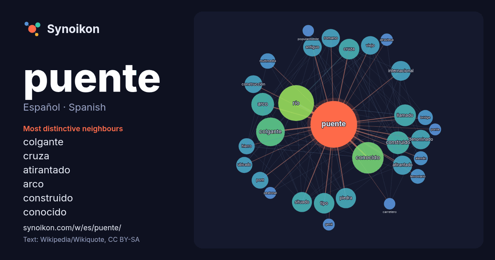

Español · Spanish · word of the day list
puente
“bridge” · The words found around it in 1651 instances from Spanish Wikipedia, Wikiquote.

Most distinctive neighbours
- colgante 75×
- cruza 37×
- atirantado 35×
- arco 33×
- construido 31×
- conocido 29×
- río 27×
- denominado 27×
- pont 26×
- viejo 24×
- piedra 23×
- multimedia 22×
- bridge 21×
- situado 20×
- romano 20×
- ferroviario 19×
- hierro 19×
- llamado 17×
- genil 14×
- antiguo 14×
× = how many times more often than in general Spanish Wikipedia text.
Most frequent neighbours
- río 119
- conocido 92
- colgante 76
- arco 48
- construido 48
- llamado 44
- san 41
- cruza 39
- tipo 39
- piedra 38
- situado 37
- internacional 36
- denominado 35
- atirantado 34
- antiguo 32
- viejo 32
- ciudad 31
- romano 31
- construcción 29
- nombre 26
In context
- diseños de los puentes varían en función de factores como la función del puente, la naturaleza del terreno donde se construye y ancla el puente, el material Wikipedia snippets · Puente
- Un puente atirantado, en ingeniería civil, es un puente cuyo tablero está suspendido de uno o varios pilones centrales mediante obenques. Se distingue Wikipedia snippets · Puente atirantado
- Un puente colgante es un tipo de puente en el que la plataforma (la parte que soporta la carga) cuelga por debajo de los cables de suspensión mediante Wikipedia snippets · Puente colgante
- lugar donde se levantaría el primer puente del Riachuelo. El 1 de diciembre de 1791 se inauguró el primer puente sobre el Riachuelo. Se decidió levantarlo Wikipedia snippets · Puente Pueyrredón
- El puente de Triana, denominado oficialmente como puente de Isabel II, atraviesa el río Guadalquivir a su paso por la ciudad de Sevilla (Andalucía, España) Wikipedia snippets · Puente de Isabel II
- orígenes de Puente Genil se retrotraen a la Baja Edad Media, el municipio actual no se fundaría hasta 1834 con la fusión de las localidades de La Puente de Don Wikipedia snippets · Puente Genil
- el puente, pontones, se empezaron a hacer de hormigón ligero en el siglo XX. Anexo:Lista de puentes flotantes Puente de Barcas de Sevilla Puente de Barbiezos Wikipedia snippets · Puente de barcas
- El puente de Vizcaya (Bizkaiko zubia en euskera), también conocido como puente Bizkaia, puente colgante, puente de Portugalete, o puente colgante de Portugalete Wikipedia snippets · Puente de Vizcaya
More Spanish words
- agua
- arte
- bosque
- caballo
- camino
- campana
- canción
- ciencia
- ciudad
- clima
- comida
- corazón
- desierto
- dinero
- dios
- espejo
- estrella
- familia
- fuerza
- gato
- historia
- invierno
- isla
- jardín
- lengua
- lluvia
- madre
- mapa
- miel
- montaña
- muerte
- naturaleza
- oro
- otoño
- pan
- perro
- reloj
- sal
- salud
- silencio
- sombra
- tiempo
- tormenta
- trabajo
- tren
- té
- verano
- verdad
- vida
Precomputed on 2026-10-09 with default settings (±5 words, medium corpus). The interactive map can refresh it with live data.